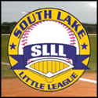

Project Analysis
Client: Good Sports
Project: Re-Design
Designer: Lewie "Jason" Rogers
Site Intent:
Good Sports
Traffic global rank 23,066,376, us 66,220 Last Month Stats (Estimated)
Keywords:
sporting goods, baseball, softball, football, lacrosse, basketball, volleyball, Demarini, Worth, Easton, Wilson, Louisville Slugger, Mizuno, Marucci, Old Hickory, Rawlings, Under Armour, All Star
Site is outdated. Site has SEO ranks. Organization is to be achieved. Company is located in Orlando, Fl area
The intent of the client is freshen and update the goodsports.biz website. The site is intended to educate customers on quality sporting good products.
While the site lacks more than their competitors in Google rankings, the site clearly takes a back seat in design quality too. Site needs to be user friendly, with mobile first approach, with a emphasis on organization.
The new site will be user friendly, appealing to the eye and totally functionable, with the user in mind. Site needs to be responsive to many different types of users.
Competitive Analysis:
Local research shows that competition for the products being offered mainly comes from bigger corporate companies. The company has a good ole' times feel, with a knowledgeable staff. Their ability to give great customer support has created a folk lore reputation that needs to be capitalized on.
Using Alexa http://www.alexa.com to research sttic over the last three months.
Hibbett Sports
Traffic global rank 3,177,754, Last Month Stats (Estimated)
Keywords:
sports, footwear, shoes, equipment, apparel, team, sporting goods
Site uses good choices for color. Site appears to updated. High quality photos are used in the site. Company is located in Ft. Lauderdale, Fl.
Sports Authority
Traffic global rank 6,957, us 1,504 Last Month Stats (Estimated)
Keywords:
Sports Authority, Sporting Goods, Sports Store, Sport Stores, Sports Stores, Sports Equipment, Fitness Equipment, Exercise Equipment, Fitness, Apparel, Footwear, Shoes, Team Sports, Action Sports, Golf, Racquet, Games, Fan Shop, Outdoors, Outlet, Sports
Site uses good choices for color. Site is updated daily with new content. High quality photos are used in the site. Site also has star power with affiliations top sporting good brands.
Dick's Sporting Goods
Traffic global rank 3,671, us 836 Last Month Stats (Estimated)
Keywords:
Dick's, Sporting goods, sports gear, athletic apparel, outdoor apparel, footwear, golf equipment, exercise equipment, outdoor gear
Site uses good choices for color. Site appears to updated. High quality photos are used in the site. Site has few keywords, yet ranks pretty high.
Targeted Audience:
Residential Demographics:
According to the demographics, the audience can be male or female in age ranges of 8-65yrs old.
Jeff Blank:
Jeff is a 52yr old married white male. He is a supervisor at a local amusement park. He makes about $54k a year. He has two sons, 13yr old and 15yr old who play baseball and are ages 10 and 12.
He and his family are avid sports fans and play youth baseball at the local level.
Lisa Worker
Lisa is a 32yr old single african/american mom. She is a paralegal at a local law firm and makes about $42k a year. She has a 8yr old daughter who plays basketball and a 10yr old boy who plays football.

Southlake Little League
Southlake is a non-profit youth organization. They also have to supply equipment to their league.
Both Jeff and Lisa have the same needs. Although Jeff's sons are older and play at higher competition. Both families need quality equipment at a good price. All youth sports leagues have high costs to replace equipment and need alternative pricing on quality products.